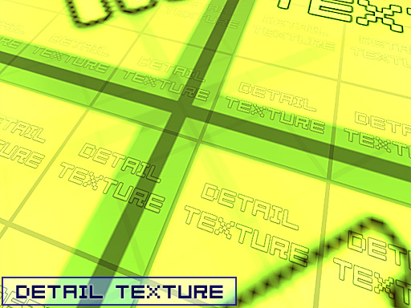
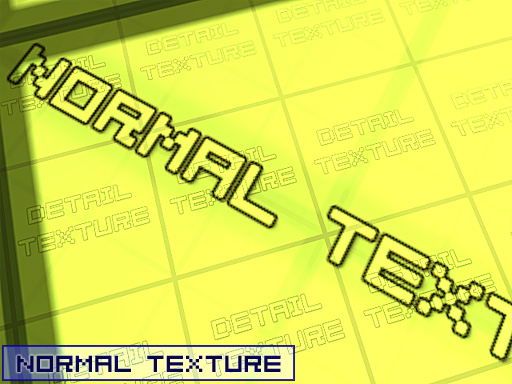
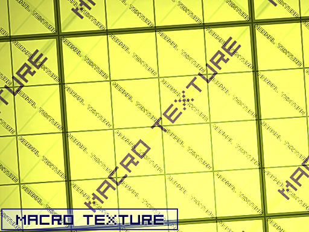

Macro Texture
You can define a macro texture for each texture in its properties using the texture browser (which requires putting the texture into MyLevel). This macro texture is drawn additionally on top of the texture.
It's very nice for repeating textures on large surfaces (mountains, huge walls), but almost nobody uses it... (was heavily used in Unreal 1.
It can produce quite subtle effects, but there are a lot of possibilities.
Procedure
Using HortonWhos technique of texture scaling is the best way to create a 'new' texture from an extisting texture without creating any new packages, if you've created your own texture, skip the first step.
- If you want to use an existing texture WetTexture in MyLevel (or an external .utx) , set the source as the texture you want to use.
- Change the DrawScale of this texture by right clicking it in the Texture browser and changing the value under the Texture heading
- Go to the properties of the texture you want to add the MacroTexture to and set its "Macrotexture" property to the texture you imported (or reference with the WetTexture )
- You won't see the MacroTexture in the browser without D3D mode on, but you will see it in game when you run the map.
Tarquin: HortonWhos ???
Mosquito: Tim Hortons ofcourse! I've never heard of this MacroTexture stuff before, is it even included in unreal 2 engine builds?
MythOpus: It should be. I've seen it before surely. I think you can make your own Macro materials so, not just assign other textures as a macro.
Tarquin: well I don't understand these instructions at all. WetTexture? What? The old ones were clearer.
Examples
For example the wall structure on the very first shot repeats which leads to stripes and a kind of pattern. On the second shot there's a macro texture which adds dark/bright shades which make the wall look more natural (similar to detail textures but not if you're close to a wall but on large dimension). Same for the stone in shot 3/4 and the ceiling in 5/6.
Here's a basic example of both Detail and Macro Textures in action.
The following 3 images are the textures used :
![[jrm_macrotexts]](images/jrm-macrotexts.gif) The Detail, Standard and MacroTextures |
In this first shot you can see the detail texture. The source texture had its DrawScale set at 0.250000

|
In this second picture, you can see the "Normal" Texture, with a slight overlay of both Macro and Detail Textures.

|
In this third and final picture, you can see, zoomed out from the surface, the Macro Texture.
The Macrotexture has a DrawScale of 4.00000, making it 4 times as large on the surface as the normal texture.

|
You can download the example map and files at http://wiki.beyondunreal.com/dl.php/wiki/examplemaps/macrotexturetest.zip.